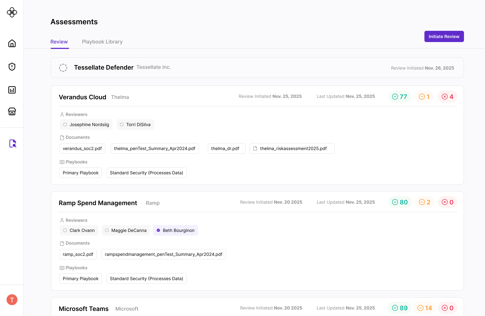
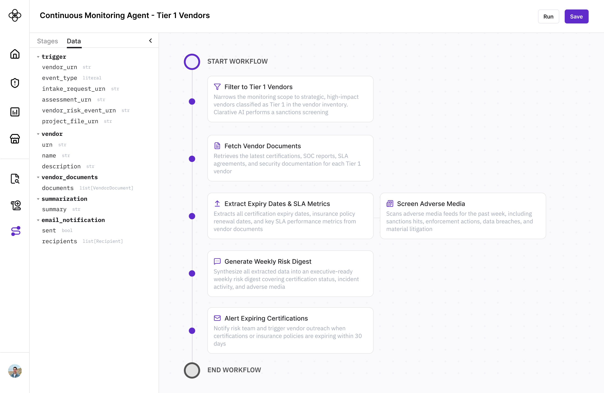
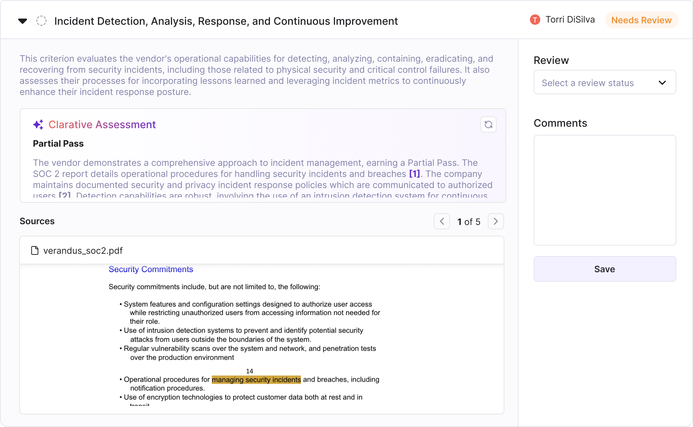
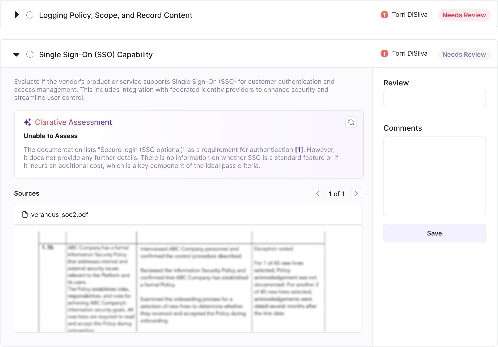

The problem
Third-party risk managers operate in one of the least forgiving environments in enterprise software — they're subject to global regulations, external audits, and the very real consequence that an error in their vendor assessments can expose their organization to financial, operational, or reputational harm. When we set out to bring AI into our due diligence platform, we knew that building trust with our integrated AI systems was key to user adoption. It's easy enough to automate high-volume, repetitive tasks — here's how I tackled the problem of building AI-integrated features that a risk manager could stake their reputation on.
Starting with the user
The instinct in a lot of AI product development is to optimize for automation, but that framing was backwards for our users. A risk manager who can't explain why they scored a vendor a certain way, or who can't point an auditor to a source, hasn't saved time. Our user interviews were clear: what mattered most was control and insight into what the AI was doing, so they could have genuine confidence in the output. That reframing drove my core design principles.
Human-in-the-loop as the default, automation as the opt-in
Out of the box, anything the AI drafts or pre-populates requires a human review before it's finalized.

Our Assessments page, where AI does a first pass before a user can review the assessment results
However, we also knew that "review everything" isn't sustainable at scale for larger risk programs. So we built configurable workflows that let teams define when AI can act autonomously without requiring a manual review step each time, through our AI Risk Agents. The key condition: even in fully automated flows, there's always a visible log of what the AI Agent did versus what a human did.
This let our users test the platform, build confidence, and then selectively automate the parts of the workflow where they felt comfortable.

An example Risk Agent that users can use to automate workflows
Showing our work with sources + reasoning
Every AI suggestion comes with sources. If the AI is proposing a response to a vendor questionnaire or recommending an assessment score for a specific control, the user can see exactly what informed that output and pull up the source directly without leaving their workflow. I intentionally designed source review to be an extremely seamless interaction, and it was something our users universally called out as a differentiator.

An example of source citation
The citations are a gamechanger, I like how I can immediately know where it (AI response) came from.— Risk Manager at a global fintech, early adopter
But we didn't stop at citations. We also surface the AI's reasoning with an explanation of why it reached a particular conclusion. For a risk manager preparing for an audit, there's a meaningful difference between "the AI marked this privacy control as "needs review"" and "the AI marked this privacy control as 'needs review' because the vendor provides a copy of a privacy policy, but it is unclear whether or not it covers the services being evaluated." The reasoning gives users something they can defend, and helps them decide whether they agree.
Together, sources and reasoning let users engage critically with AI outputs rather than just accept them, which built more durable confidence with our risk professionals over time.
When not to answer
Another trust decisions I made was around what the AI does when it doesn't have a good answer. When the AI couldn't reach a defensible conclusion in the assessment review or the available evidence was inconclusive, it said so explicitly rather than surfacing a low-confidence answer - better to not answer than to be wrong! The field would remain flagged for human review, indicated by a grey color meaning "no AI answer."

Our AI review states
For our users, this was actually reassuring. They could trust Clarative's answers precisely because they knew it wouldn't hallucinate one when it didn't have the evidence.
Consistency as a trust foundation
Underlying all of this was something less visible but just as important: the AI had to behave predictably. Users in regulated environments develop finely tuned instincts for when something feels off, and an AI that occasionally does something unexpected can erode confidence in the entire process.
I treated consistency as a design requirement, which sometimes meant deliberately constraining how "smart" the AI could be. For our vendor questionnaires, for example, Clarative AI does a first-pass review to flag any responses that aren't up to par before submission. Rather than letting the AI produce freeform reasoning, we bucketed issues into specific, reliable categories. Instead of "your SOC 2 report is from 2025 instead of 2026," the output would be "Potentially expired document" - I was happy to sacrifice a little detail for consistency.

A snippet of our AI vendor questionnaire review screen
Takeaways
This experience taught me that building an AI-forward product for regulated workflows is a fundamentally different design problem than building AI for general productivity. When speed is the goal, optimizing for automation makes sense. When trust is the goal, the job is to make users more capable, not more passive.
When our risk managers could see the sources, understand the reasoning, and rely on the system to flag what it didn't know, they stopped treating AI as something to be suspicious of and started treating it as a tool they could actually use.